制度準備中コンディショニングジャパン
認定講師制度のご案内
その技術を次の担い手へ。
Pass on the craft.
現場で培った経験を土台に
技術を実践し、説明し、伝える力を磨く。
認定講師としての学びと活動をご紹介します。
対象：技術を学び、現場で実践してきたトレーナー・整体師・セラピストなど、身体に関わる専門職の方
認定講師制度の案内を受け取る
案内の受け取り先を準備しています。公開までお待ちください。

01 — Questions
こんなことを
考えていませんか。

- 技術は学んできたが、人に教える方法は学んだことがない。
- 感覚ではできても、言葉や手順に整理しきれていない。
- セミナーを開いてみたいが、内容や指導の組み立てに自信がない。
- 一人で学び続けるより、相談し合える環境がほしい。
実践する力と、教える力は別のもの。
だからこそ、教える力は練習して身につけられます。
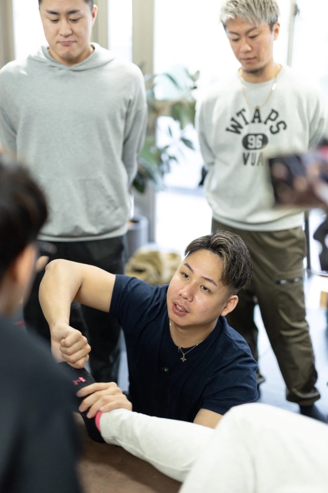


02 — Role
認定講師が担うこと

肩書きではなく、受講生に対して何を担うか。
講師に期待する役割を、4つに整理しています。
- Practice
実践する
担当する技術を、評価から再評価まで基準どおりに行い、受講生の前で実演できる。
- Explain
説明する
何を見て、なぜその手順なのかを、受講生がわかる言葉で伝えられる。
- Coach
指導する
受講生の手の動きを見てつまずきに気づき、習得と安全を支えられる。
- Reflect
振り返る
講座の進め方や自分の説明を見直し、学び直しを続けられる。
03 — Education
協会が目指す教育
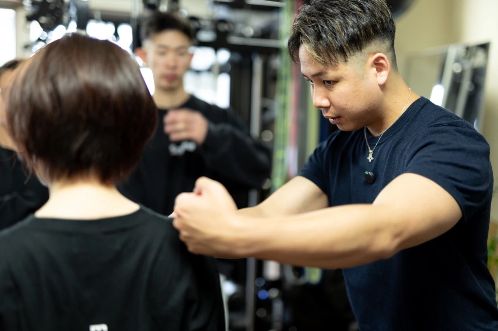
評価 → 介入 → 再評価
技術の形よりも先に、確かめながら進める順番を共有します。
施術と運動をつなぐ
施術で終わらず、日常の動作や運動へつなげる流れまで扱います。
結果と限界を説明する
変化があったことも、なかったことも、そのまま伝える姿勢を大切にします。
学び直しと教材の更新
新しい知見や現場の経験に合わせて、教材と説明を見直します。
安全性と適用の判断
行わない判断や、医療機関の受診を勧める判断も技術に含めます。
04 — 12 contents
12のコンテンツという
教育の広がり
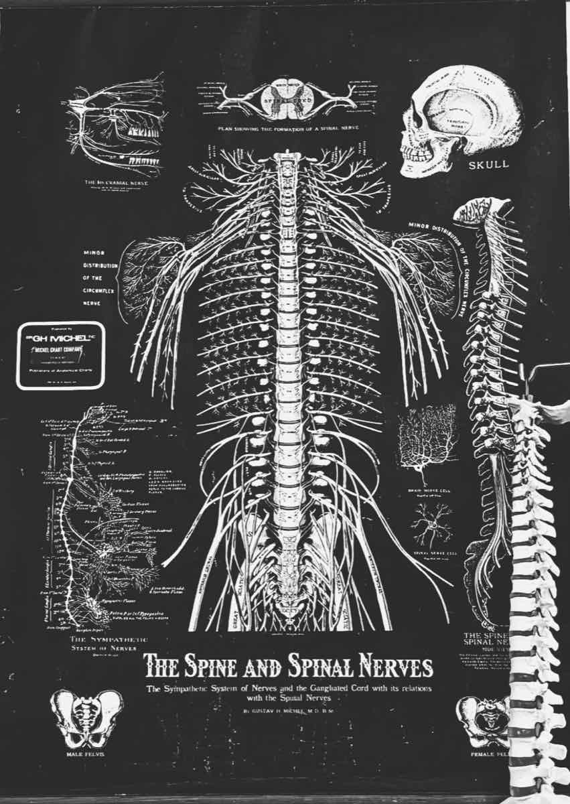
創設者・原口慶篤がこれまでに開発してきた「零式」のコンテンツです。協会の教育の土台として、次のような領域があります。
認定はコンテンツごとに行う構想です。すべての講座の受講や、すべての領域を教えることが条件になるわけではありません。詳しい条件は決定後にご案内します。
- 手・足土台と感覚の入り口としての手と足
- 頭部耳・顎・顔・頭皮・首へのアプローチ
- 姿勢評価から運動までの姿勢づくり
- 経絡ストレッチ経絡の流れに沿った全身のストレッチ
- 関節関節調整法（BASIC・ADVANCE）
- ボディメイク美脚美尻、運動とトレーニングの設計
- 内臓へのアプローチ内臓・神経のつながりと評価
- 全身の施術設計女性のエイジング、全身疲労の評価と施術設計
Annual seminar 2027
零式 2027 年間セミナー
12のコンテンツは、2027年の年間セミナーとして開催が予定されています。
講師を目指す前に、まず受講者として技術を学ぶ場です。
 01零式-ハンドベースコンディショニング2027年1月16日（土）東京｜対面＋オンライン・1日（外部サイト）
01零式-ハンドベースコンディショニング2027年1月16日（土）東京｜対面＋オンライン・1日（外部サイト）- 02零式-ヘッドコンディショニング極2027年2月20日（土）・21日（日）東京｜対面・2日間（実技あり）（外部サイト）
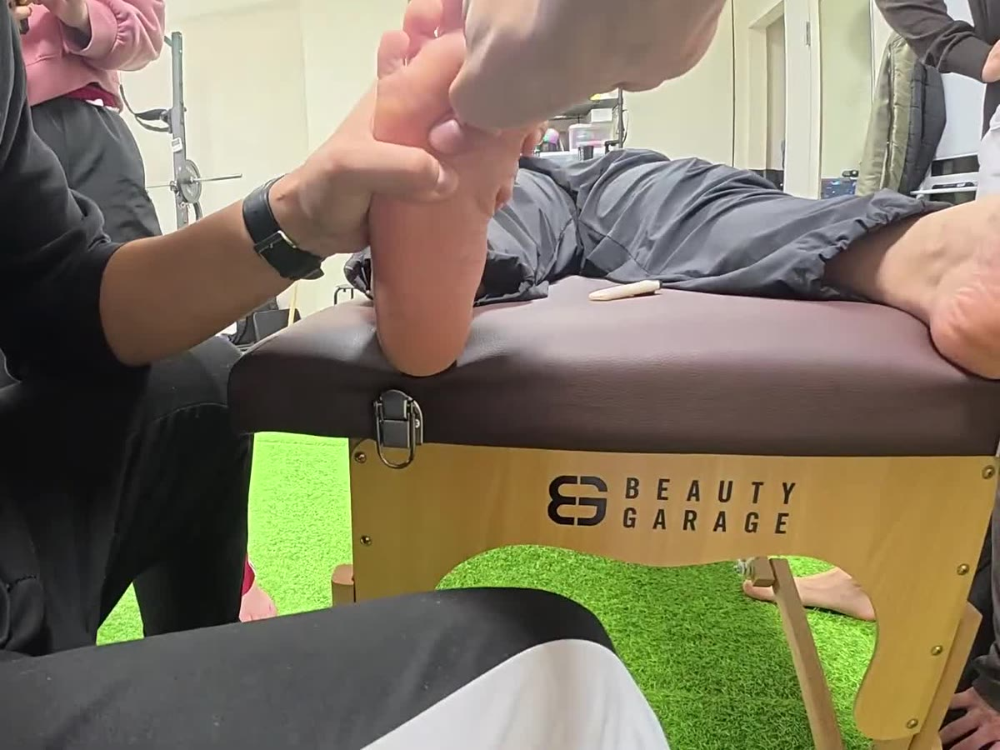
03零式-フットベースコンディショニング2027年3月13日（土）東京｜対面・1日（実技あり）（外部サイト）- 04零式-美姿勢コンディショニング2027年4月17日（土）・18日（日）東京｜対面・2日間（実技あり）（外部サイト）
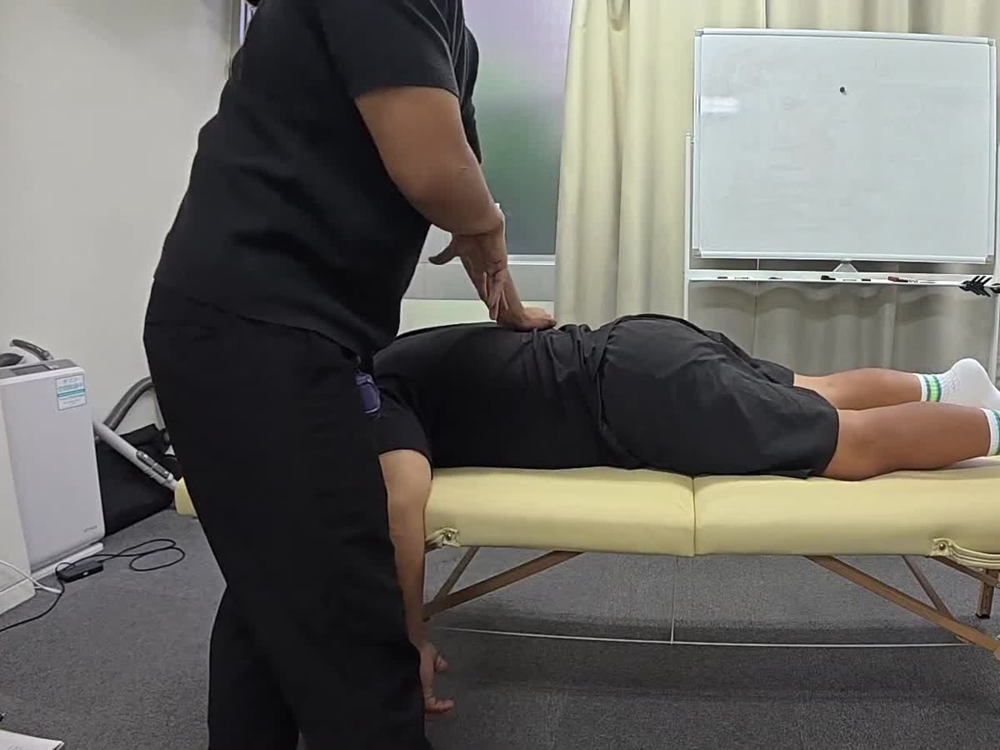
05零式-経絡ストレッチ2027年5月29日（土）・30日（日）東京｜対面・2日間（外部サイト） 06零式-美脚美尻コンディショニング2027年6月19日（土）東京｜対面・1日（実技あり）（外部サイト）
06零式-美脚美尻コンディショニング2027年6月19日（土）東京｜対面・1日（実技あり）（外部サイト）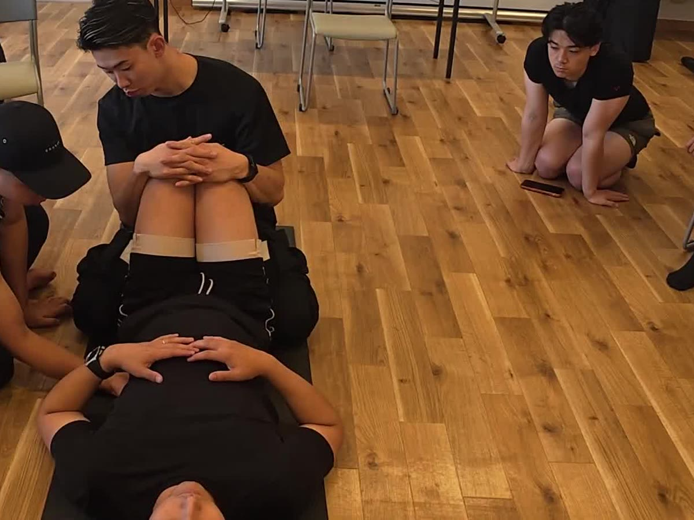
07零式-ボディメイク・コンディショニング合宿2027年7月17日（土）〜19日（月・祝）高知｜合宿・3日間（外部サイト）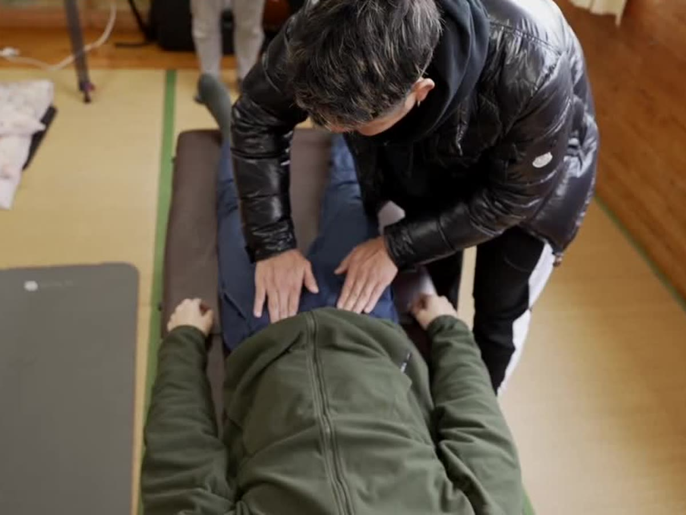
08零式-内臓調整 ― 神経アプローチ2027年8月21日（土）・22日（日）東京｜対面・2日間（実技あり）（外部サイト）- 09零式-関節調整法 BASIC2027年9月18日（土）・19日（日）東京｜対面・2日間（外部サイト）
- 10零式-関節調整法 ADVANCE2027年10月9日（土）・10日（日）東京｜対面・2日間（外部サイト）
 11零式-ウーマンエイジング・コンディショニング2027年11月13日（土）東京｜対面・1日（実技あり）（外部サイト）
11零式-ウーマンエイジング・コンディショニング2027年11月13日（土）東京｜対面・1日（実技あり）（外部サイト） 12零式-ZERO RECOVERY 第2期2027年12月11日（土）・12日（日）東京｜対面・2日間（外部サイト）
12零式-ZERO RECOVERY 第2期2027年12月11日（土）・12日（日）東京｜対面・2日間（外部サイト）
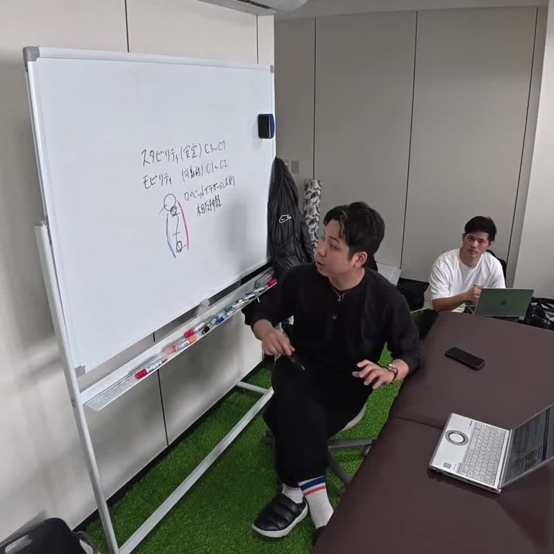
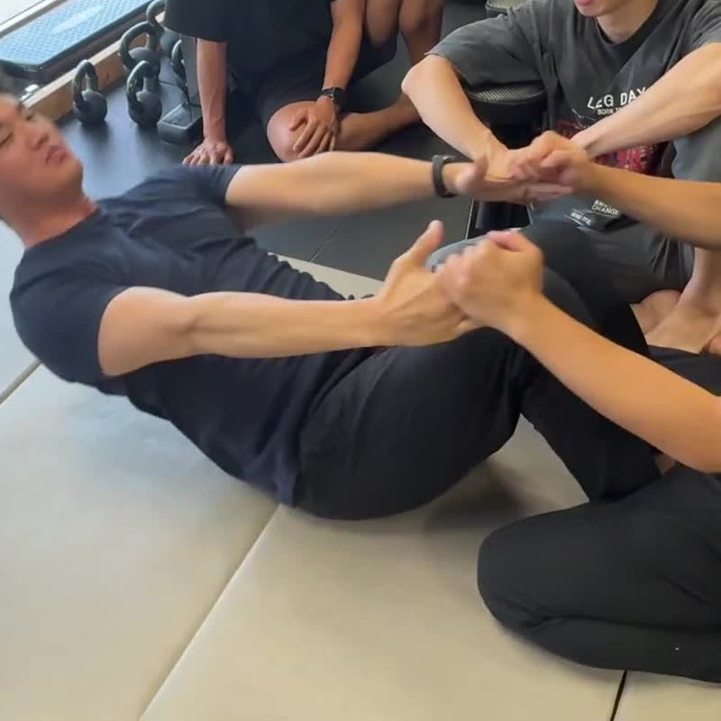

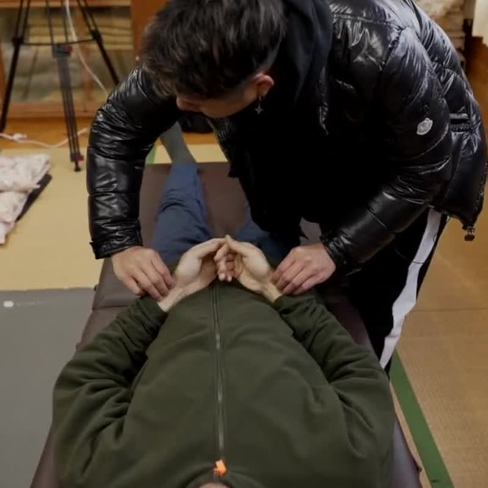

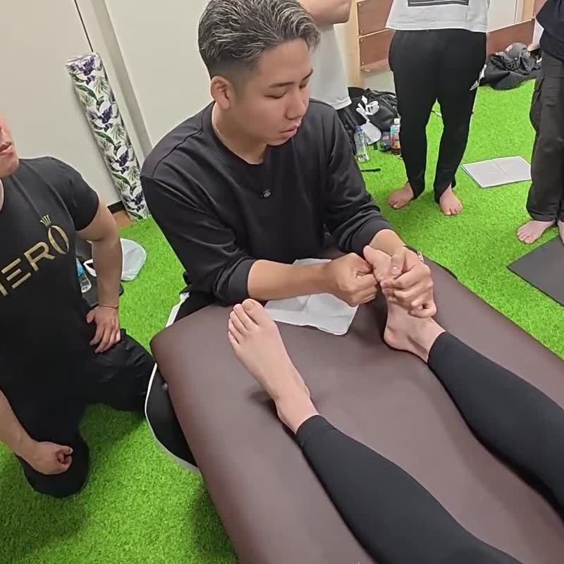

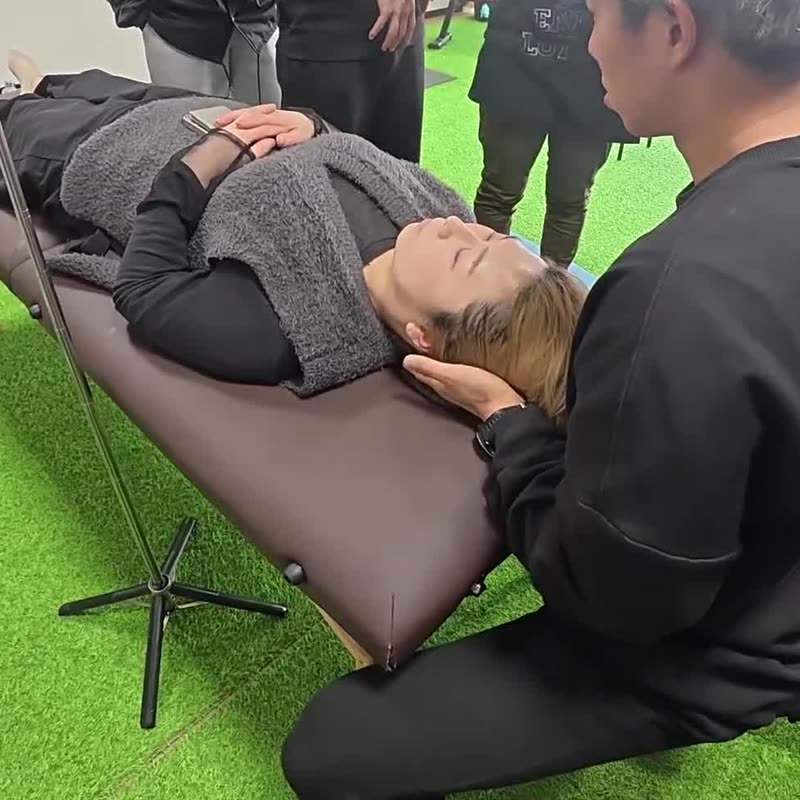
過去のセミナーの様子
日程はすべて予定です。料金・会場・定員・受付状況は、各講座のページでご確認ください。年間セミナーの受講は、認定講師制度への申し込みとは別のものです。
05 — Path
認定までの道筋
設計案：正式なプロセスは決定後にご案内します。試験・面談・研修時間などは確定していません。
制度案内
制度の考え方と今後の予定を知る
条件の確認
担当したいコンテンツと必要な学習を確認
必要な学習
担当コンテンツの技術と考え方を学ぶ
実践・指導の確認
行う力と、教える力の両方を確認
認定
基準を満たした方を講師として認定
継続的な学びと活動
学び直しを続けながら活動へ
認定講師制度の案内を受け取る
案内の受け取り先を準備しています。公開までお待ちください。
06 — After certification
認定後の活動と支援
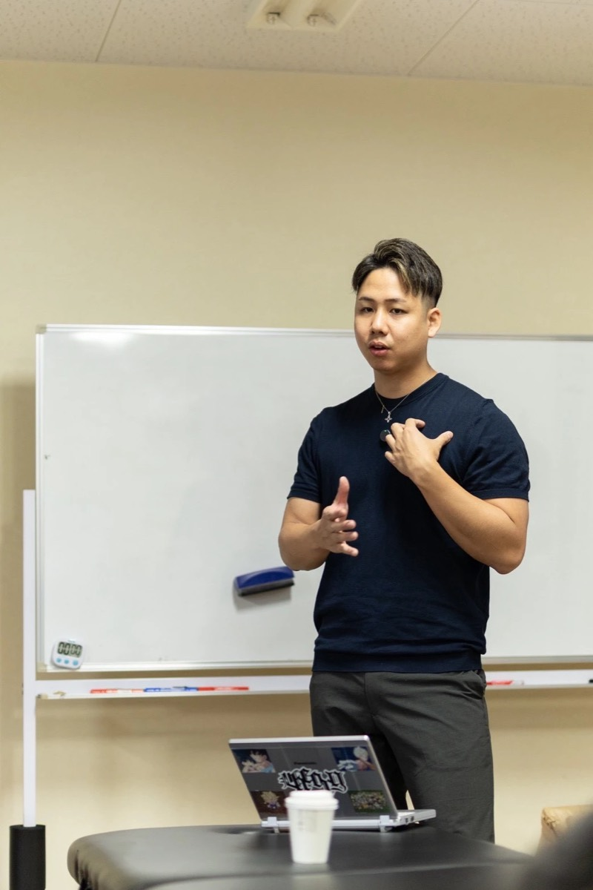
認定後は、担当するコンテンツの講座を受け持つことなどを想定しています。教材や指導方法の共有、講師同士の学び直しなど、活動と支援の具体的な内容は現在検討しています。決まったものから、このページでお知らせします。
07 — Concept
1コンテンツにつき
最大10人という構想
構想では、12のコンテンツそれぞれについて、認定講師は最大10人までとしています。
これは認定する講師の人数の上限についての構想です。募集枠や残席、先着順を示すものではなく、案内を受け取った方が順に認定されるものでもありません。
人数の上限の考え方や、同じ方が複数のコンテンツを担当できるかどうかは、決定後にご案内します。
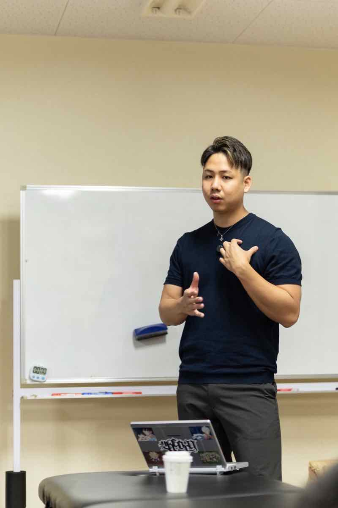
08 — Founder
創設者 原口 慶篤
はらぐち のりあつ（のりお）
パーソナルトレーナー兼整体師として12年以上、施術、運動指導、ボディメイク、姿勢改善に携わる。TOTAL BODY FITNESS THEORY、零-ZERO-、零式の名称で、専門家向けのセミナーや企業研修、技術教育を行ってきました。
解剖学・生理学・神経系・運動の視点と、関節調整、オステオパシー、経絡、頭部・内臓へのアプローチを組み合わせ、これまでに12のコンテンツを開発しています。
NASM-PES／NSCA-CPT（いずれも民間資格）。※整体師は国家資格ではありません。
09 — Fit
ご検討の目安
このような方に向いています
- 学び直しを続けたい
- 技術だけでなく、教え方も磨きたい
- 受講生の習得や安全に責任を持ちたい
- 説明できないことを、わからないと認められる
あらかじめご検討ください
- 認定は、収入や集客を保証するものではありません。
- コンテンツによって、学習と確認の過程が必要になります。
- 認定後も、協会の基準に沿った活動が求められます。
ここに挙げた内容は目安であり、正式な応募資格ではありません。
10 — FAQ
よくある質問
認定講師になるための条件はありますか。
国家資格の要否、経験年数、必要な講座、確認の方法などの条件は、現在検討しています。決定後にご案内します。
講師の経験がなくても相談できますか。
はい、案内の受け取りに講師経験は問いません。認定の条件は決定後にご案内します。
複数のコンテンツを担当できますか。
現時点では決まっていません。決定後にご案内します。
費用や更新制度はありますか。
費用・更新制度の有無と内容は、決定後にご案内します。
地方でも活動できますか。
各地で技術を届けられる講師を育てることを目指していますが、活動地域に関する条件は決定後にご案内します。
案内を受け取ると、申し込みが確定しますか。
いいえ。案内の受け取りは、制度の情報を受け取るためのものです。受講・認定・契約のお申し込みにはなりません。
認定講師は国家資格ですか。
いいえ。コンディショニングジャパン協会独自の制度で、国家資格や公的資格ではありません。
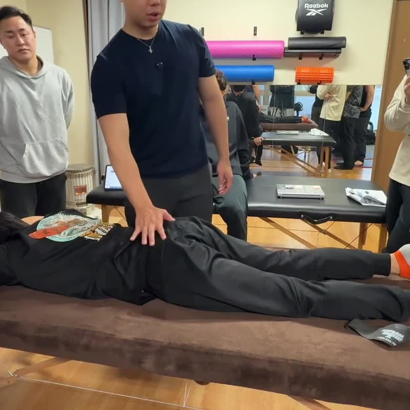
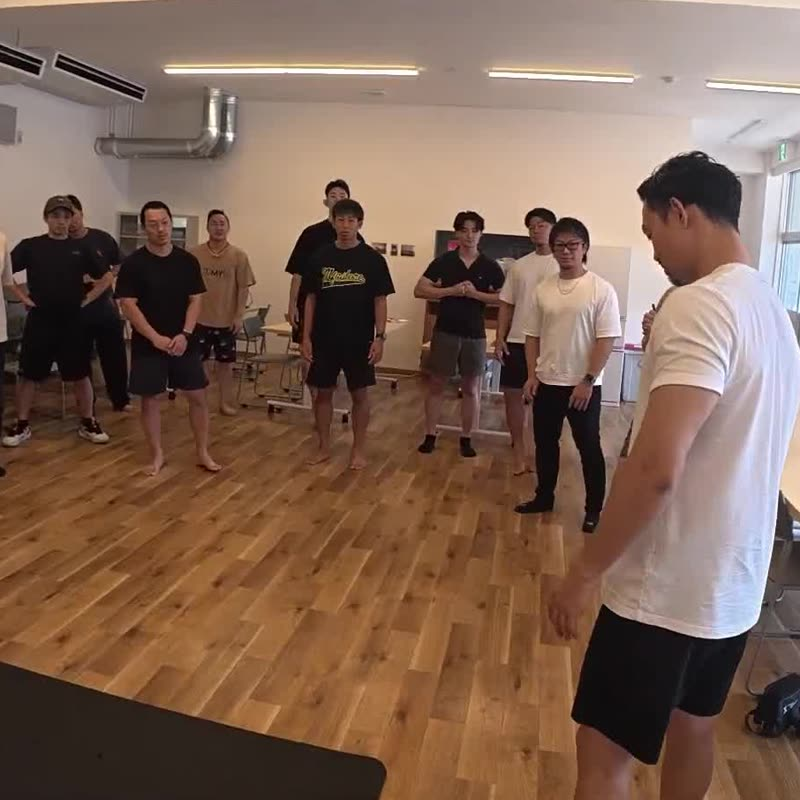
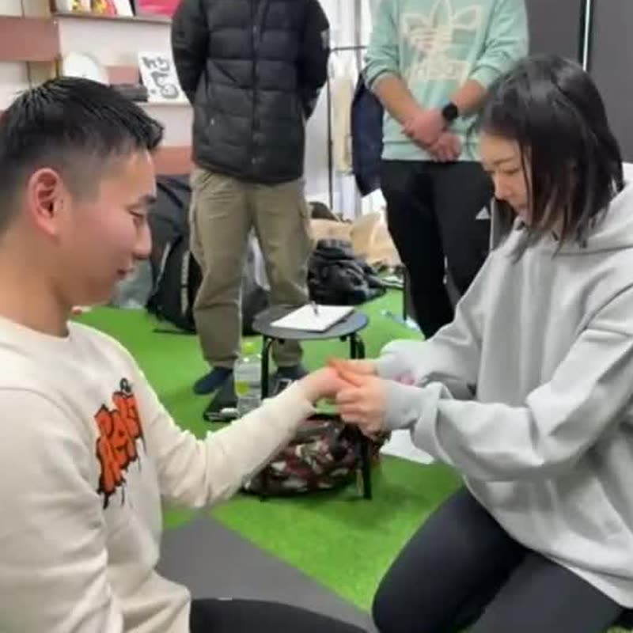
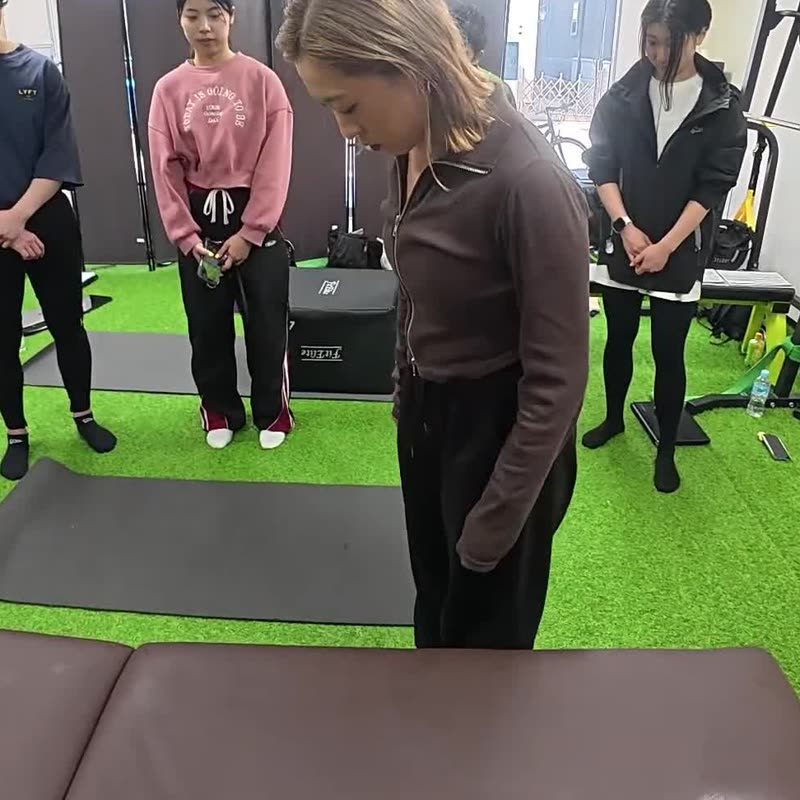
11 — Next step
現場で培った技術を、
次の人へ伝える力に。
技術を実践してきたトレーナー・整体師・セラピストなど、教える活動に関心のある方へ。
受け取れる情報
- 認定講師制度の内容が決まった際のお知らせ
- 説明会などの日程が決まった際のご案内
認定講師制度の案内を受け取る
案内の受け取り先を準備しています。公開までお待ちください。
受け取った後の流れ
- ボタンから案内の受け取り先（公式LINE等）を開きます。
- 制度の内容や説明会が決まり次第、順次ご案内が届きます。
- 受け取った時点では、受講・認定・契約のお申し込みにはなりません。